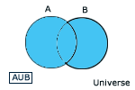
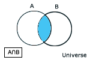
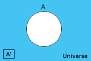
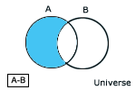
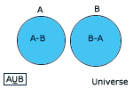
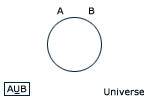
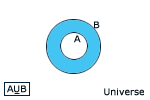

สมบัติของ Exclusive Union
การดำเนินการบนเซต (Operation of Set )
1. ยูเนียน ( Union )
นิยาม กำหนดให้ A , B เป็นเซตใดๆ
ยูเนียนของเซต A , B คือ เซตที่ประกอบด้วยสมาชิกซึ่งอยู่ในเซต A หรือ เซต B หรืออยู่ทั้งในเซต
A และ เซต B เขียนแทนด้วย A U B นั่นคือ
A U B = { x
| x ฮA หรือ x ฮB}

คุณสมบัติของยูเนียน
หลักการหาจำนวนเซต
1. ถ้า B เป็นเซตจำกัด และ A Ì
B แล้ว จำนวนของเซต x โดยที่ A Ì
x และ x Ì B 2. ถ้า B เป็นเซตจำกัด และ A Ì
B โดยที่ A มีสมาชิกเพียงตัวเดียวแล้ว จำนวนของเซต
x โดยที่ A Ë x และ x Ì
B
จะเท่ากับ 2m-n
เซต
จะเท่ากับ 2m-n
เซต
3. ถ้า B เป็นเซตจำกัด และ A Ì
B แล้ว จำนวนของเซต x โดยที่ A Ë
x และ x Ì B
= (จำนวนเซต
x โดยที่ x Ì B ) - (จำนวนเซต x โดยที่ A
Ì x
และ x Ì B )
= 2m
- 2m-n
2. การอินเตอร์เซกชั่น
(Intersection)
นิยาม อินเตอร์เซกชั่นของ A และ B คือเซตที่ประกอบด้วย สมาชิกของ A และ B ทั้ง 2 เซต นั่นคือ
A Ç
B = { X Î u |
X ÎX | A Î B
}
A Ç
B = A È B B Ì
A ได้ A Ç B = B

EX กำหนดให้
A = { 1,2,3,4,5,6,7 }
B = { 1,3,5,7,9 }
C = { 3,4,5,7 }
จงหา
2. A Ç
( B Ç C )
Answer
| Clear
3. A Ç
( B È C )
Answer
| Clear
4. (A Ç
B) È (A Ç C)
Answer
| Clear
5. A È
( B Ç C )
Answer
| Clear
6. (A È
B) Ç (A È
C )
Answer
| Clear
EX ให้ A = { X Î
I | X < 9 } B = { X Î I | X ³
-2 } C = { X Î I | 0 < X £
9}
จงหา
1. A
Answer
| Clear
2. B
Answer
| Clear
3. C
Answer
| Clear
4. A Ç B
Answer
| Clear
5.
A Ç C
Answer
| Clear
6. B Ç C
Answer
| Clear
สมบัติของการอินเตอร์เซกชั่น
3. คอมพลิเมนต์ (Complement)
กำหนด universe = {
1,2,3,
, 10} และ A = { 1,3,5,7,9}
เรียก{ 2,4,6,8,10}
ว่า คอมพลิเมนต์ของเซต A
นิยาม กำหนดให้ A Ì universe
คอมพลิเมนต์ของเซต A คือ เซตที่ประกอบด้วยสมาชิกซึ่งเป็นสมาชิกของ universe แต่ไม่เป็นสมาชิกของเซต A
สัญลักษณ์ที่ใช้ A' หรือ c[A]
หรือ A'
= { x Î universe | X Ï
A }

EX กำหนดให้ universe = { 10, -9 , -8, ,8,9,10}
A = {
1,2,3,
,10}
B = { 2,4,6,8,10}
C = { -1,-3,-5,-7,-9,-10}
จงหา
1. A'สมบัติของคอมพลิเมนต์
ถ้า A และ B เป็นสับเซตของเอกภพสัมพัทธ์แล้ว
1.
(A')'= A นิยาม กำหนดให้
A,B เป็นเซตชนิดใดๆ ผลต่างระหว่างเซต A และ B คือเซตที่ประกอบด้วยสมาชิกซึ่งอยู่ในเซต
A แต่ไม่อยู่ในเซต B เขียนแทนด้วย A-B นั่นคือ A-B = { X | X Î
A และ X Ï B } EX สมบัติของ Difference
2. Æ'
= u
3. universe' = Æ
4. A Ç A' = Æ
5. A È A'= u
6. ( A Ç B)'= A' È
B'
7. (
A Ç B)'= A' È
B'
8. A
Ì B ก็ต่อเมื่อ B' Ì
A'
9. A
Ç B = Æ
ก็ต่อเมื่อ A Ì
B'
4.
ผลต่าง (Difference)

A-B เมื่อ B Ì
A แล้ว A-B = Æ
A=B A-B = Æ แล้ว A Ì
B
A = { 1,2,3} B
= { 2,4,6}
จงหา
Answer
| Clear
2. B-A
Answer
| Clear
1.
A-A = Æ
2. Æ
-A = Æ
3. A-Æ
= A
4. A' = universe - A
5. A-B ¹ B-A ยกเว้น A
= B
6. A-B = A Ç B'
7. A-B = A - (A Ç B)
8. A - (B Ç
C) = (A-B) È (A-C)
9. A - (B È C) = (A-B)
Ç (A-C)
10. ( A-B) - C = A - (B È
C)
11. A - (B-C) = (A-B) È
(A Ç C)
12. A Ç (B-C) = (A Ç
B) - (A Ç C)
13. A Ç (B-C) = (A Ç
B) - C
14. A- (B-C) = (B'-A') È
(A Ç
C)
15. A-B = A ก็ต่อเมื่อA Ç
B = Æ
16. A-B = Æ ก็ต่อเมื่อ
A Ì B
17. A-B = B'- A'
18. (A-B) - C = (A-C) - B
EX พิสูจน์ (A Ç B Ç C) È (A' Ç B Ç C) È (B' È C') = universe
หมายเหตุ ขอแทน เครื่องหมาย Ç ด้วย ^5. เอกซ์คลูซีฟยูเนียน (Exclusive Union)
นิยาม กำหนดให้ และ เป็น สับเซตของเอกภพสัมพัทธ์
เอกคลูซีฟยูเนียนของ และ คือ เซต (A-B) È (B-A)
กล่าวคือ A È B = (A-B) È (B-A) นั่นคือ
A
È B = { X Î
universe | X Î A หรือ X Î
B และ X Ï A Ç
B}
สมบัติของ
Exclusive Union
1. A
È B Ì
A È B และ A È
B ¹ A È B
2. A È B = A È
B เมื่อ A Ç B = Æ

3. A È
B = Æ เมื่อ A = B

4. A È B
= B-A เมื่อ A Ì B
